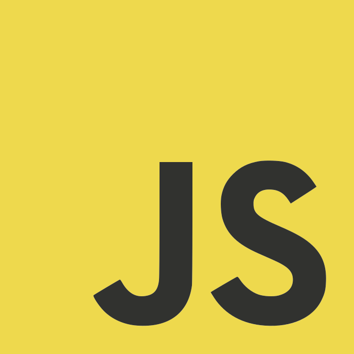
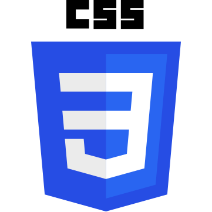
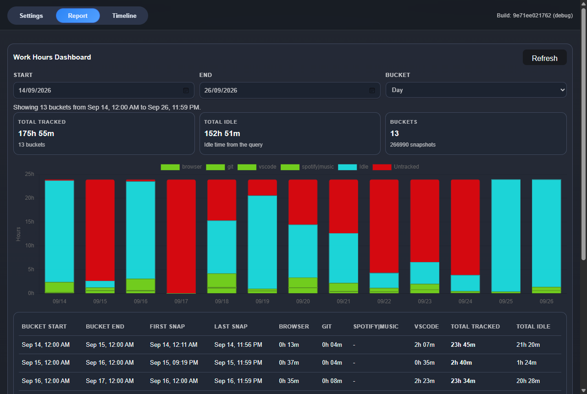
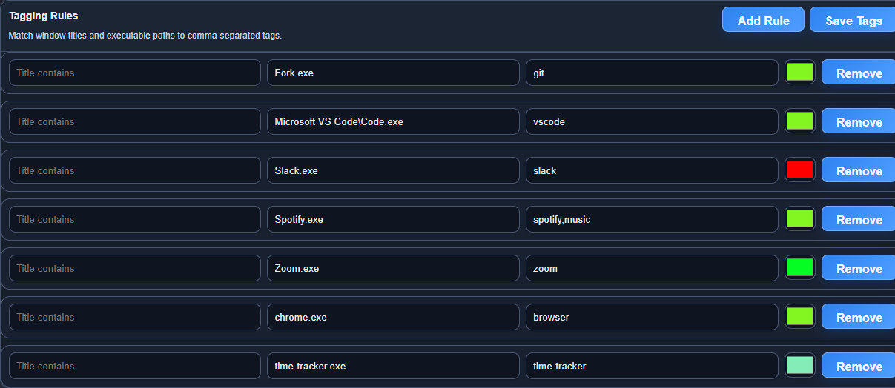

Accessibility
Leave Feedback
Time Tracker
A Windows app written in Rust that quietly records what I am doing on my PC, then turns it into work-hour reportsand a replayable timeline, with all the data kept on my own machine.
2 Months
Solo
Skills Used:
Rust
SQL

Java Script
HTML

CSS
Git
Why I Built It
Most time trackers rely on starting and stopping a timer, and I always forget. I wanted something that runs on its own, works out when I am actually working and when I am idle, and lets me look back at a day to see where the time went.
The repository is private, but I am happy to walk through the code in an interview.
How It Works
Background Tracker
One executable runs in two modes: a hidden tracker process and a Tauri GUI. The tracker takes a snapshot every 100 ms by default, uses a named Windows mutex so only one copy runs, and retries failed starts and saves with exponential back-off.
What It Captures
Using the Win32 API it records visible windows and their z-order, the process tree, per-process audio levels, display layout and DPI, mouse position and last input time, network and machine details. Each source has its own settings and cool-down, so slow-changing data is not read every cycle.
Storage
Snapshots go into SQLite, with a snapshot cache so unchanged windows, displays and inputs are stored once and referenced afterwards. Schema changes use versioned migrations that run on startup, and the reporting views are rebuilt each time. A failed save is skipped and the cache reset, so the tracker keeps running.
Tagging Rules
Rules match window titles and executable paths and apply comma-separated tags and colours that I define in the settings tab. A rule can also stop a window counting as idle, so a video call playing audio still counts as active time.
Work Reports
The report tab groups time by hour, day or week and shows total worked, breaks and average workday. Idle time is worked out from the last input, and tracked, idle and untracked time are charted per tag. The grouping runs in SQL and Rust rather than in the browser to keep it fast on large databases.
Session Replay
Any past session can be replayed with a timeline scrubber and playback speeds. The app redraws the displays, windows and mouse cursor as they were, and I can add notes to a point in the session.
Desktop App
The front end is plain JavaScript, HTML and CSS served by Tauri, with Rust commands behind each tab. Settings control run on startup, which writes to the Windows Run registry key, plus snapshot interval and report colours.
Delivery
A GitHub Actions workflow builds the release executable on Windows for every push to main. Logging uses structured tracing with rotating log files.
Screenshots

Work Hours Report
Thirteen days of real use, with each day split into tagged activity, idle and untracked time, and a table of hours per tag below the chart.
Tagging Rules
Rules match an executable path or window title and apply tags and a colour, which then feed the report columns and chart.

What It Shows
Low-level Windows programming from Rust, designing a compact database schema for high-frequency data, keeping a long-running background process reliable, and building a desktop product from capture through to reporting on my own.